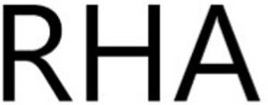

Trade Mark Journal No.2025/043 24 October 2025
WO0000001879840 (3,5,10)
Office of origin: France
Date of International Registration:23 July 2025
Date of designation in the UK:
23 July 2025

International priority date claimed: 23 January 2025
(France)
(5114967)
- Class 3
- Cosmetic products in cream, milk, oil, emulsion, fluid and lotion form for the face, body, hair and hands; anti-wrinkle treatment creams; anti-aging creams for cosmetic use; masks for facial care; cleansing products and make-up removers, including micellar gels, foams and waters; anti-wrinkle masks; non-medical preparations for skin, face and body care; day cream; night cream; sunscreen creams for cosmetic use; serum for cosmetic use; eye contour cream; lip contour cream; lip balms; perfumes; perfumery products; cosmetic preparations for skin care and treatment; face and body make-up products; washing and bleaching preparation; hair washing, treating and grooming preparations; make-up products; cosmetic dyes and mouthwashes; soaps; anti-aging skin care preparations.
- Class 5
- Dermo-cosmetic preparations and pharmaceutical products; creams and serums for medical use; sterile implantable products administered by injection for filling wrinkles, fine lines, skin depressions; pharmaceutical or dermatological products injected into or under the skin, into or under the mucous membranes to fill wrinkles and skin depressions; pharmaceutical or dermatological products injected into or under the skin, into or under the mucous membranes for reshaping or increasing the volume of the face or any other part of the body; pharmaceutical or dermatological products injected into or under the skin, into or under the mucous membranes to increase lip volume; pharmaceutical or dermatological products injected into or under the skin, into or under the mucous membranes for hydrating the skin or mucous membranes; wound healing products for medical or sanitary use; anesthetics for surgical use; injectable dermal fillers; pharmaceutical agent for the epidermis; creams for dermatological use; medicated lotions and creams for the body, skin, face and hands; disinfectants.
- Class 10
- Surgical and medical apparatus and instruments; syringes for injection of dermatological products; suture materials; injectors for medical use; lasers for cosmetic treatment of the skin and face; injection devices for pharmaceutical products; injection instruments without needles; multi-injection needle syringes; injection needles for medical use; injection devices for pharmaceutical products; genetic analysis apparatus for medical use; clinical diagnosis apparatus; diagnostic imaging apparatus for medical use.
TEOXANE S.A.
Representative: Madame JOUVEN Caroline FIDAL, 4-6 Avenue d'Alsace, F-92982 PARIS LA DEFENSE CEDEX, FRANCE